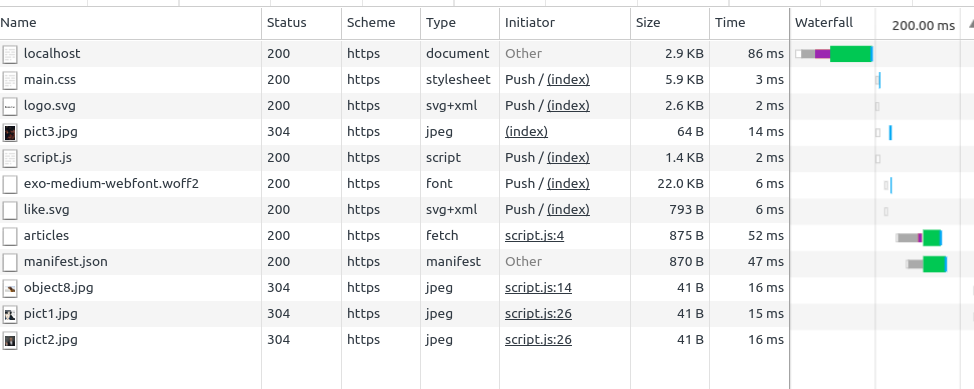

PW3 - Mise en place de Http2
La première optimisation que nous allons mettre en place est l'utilisation d'HTTP2 sur notre serveur. Le serveur que nous vous proposons est un serveur Express (NodeJS), celui-ci ne supporte pour l'instant que HTTP.
Nous allons donc intégrer le module NodeJS spdy afin de gérer cette nouvelle version du protocole.
Nous vous conseillons de faire les modifications en deux étapes :
- Rendre accessible votre site en HTTP2
- Utilisation la fonctionnalité de Server Push pour envoyer les ressources statiques de votre site à votre client
Site accessible en HTTP2
- Générez les différents certificats
openssl genrsa -des3 -passout pass:x -out server.pass.key 2048
openssl rsa -passin pass:x -in server.pass.key -out server.key
rm server.pass.key
openssl req -new -key server.key -out server.csr
openssl x509 -req -sha256 -days 365 -in server.csr -signkey
Si vous avez des soucis pour générer ces certificats, vous trouverez des certificats dans le répertoire resources
Installez le module
spdyDans le fichier
server.js, instanciez votre serveur grâce au module précédemment téléchargé.
require('spdy').createServer(options, app).listen(port);
La variable app correspond à votre instance express, et options à un objet de configuration dans lequel vous allez utiliser
les certificats récupérés précédemment.
const options = {
key: fs.readFileSync('./server.key'),
cert: fs.readFileSync('./server.crt')
};
Pour vérifier que votre serveur utilise à présent http2, vous pouvez utiliser les DevTools de Chrome. Dans le protocole de chaque requête, vous devriez voir https.

Vous pouvez également ouvrir l'onglet Security pour vérifier que votre certificat a bien été pris en compte.
ServerPush
La dernière optimisation que nous allons mettre en place est l'utilisation de la fonctionnalité de ServerPush. Celle-ci
permet au serveur d'envoyer des ressources statiques avant que le navigateur ne le demande. C'est ainsi que seront servies
les ressources statiques de notre application, situées dans le répertoire app/assets.
- Le middleware Express
staticdoit être exécuté après la route Express - Dans le handler principal de votre serveur, utilisez la méthode
pushde la réponse HTTP afin de retourner le contenu d'un fichier. La signature de cette méthode ressemble à :
res.push('url vers votre ressource statique utilisée dans le html', {
response: {
'content-type': 'content-type associé à la ressource statique manipulée'
}
})
.end(contenu de votre ressources statique)
Vous devez servir ainsi les fichiers suivants :
- le script javascript (
application/javascript) - la feuille de style (
text/css) - les polices (
font/woffetfont/woff2) - les images principales (
image/svg+xml)
Dans l'onglet Network de la console Chrome, certaines requêtes doivent à présent être initiées par un Push du serveur.
Votre serveur utilise maintenant le protocole http2 pour servir votre application.
Vous pouvez à présent vérifier le nouveau score calculé par LightHouse.